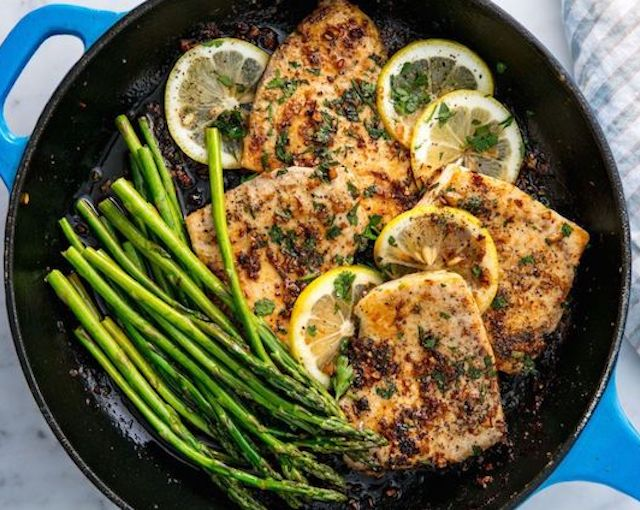

Garlicky Lemon Mahi-Mahi
INGREDIENTS
- - 3 tbsp. butter, divided
- - 2 tbsp. extra-virgin olive oil, divided
- - 4 (4-oz.) mahi-mahi fillets
- - Kosher salt
- - Freshly ground black pepper
- - 1 lb. asparagus
- - 3 cloves garlic, minced
- - 1/4 tsp. crushed red pepper flakes
- - 1 lemon, sliced
- - Zest and juice of 1 lemon
- - 1 tbsp. freshly chopped parsley, plus more for garnish
DIRECTIONS
- 1st:In a large skillet over medium heat, melt 1 tablespoon each of butter and olive oil. Add mahi-mahi and season with salt and pepper. Cook until golden, 4 to 5 minutes per side. Transfer to a plate.
- 2nd:To skillet, add remaining 1 tablespoon oil. Add asparagus and cook until tender, 2 to 4 minutes. Season with salt and pepper and transfer to a plate.
- 3rd:To skillet, add remaining 2 tablespoons butter. Once melted, add garlic and red pepper flakes and cook until fragrant, 1 minute, then stir in lemon, zest, juice, and parsley. Remove from heat, then return mahi-mahi and asparagus to skillet and spoon over sauce.
- 4th:Garnish with more parsley before serving.